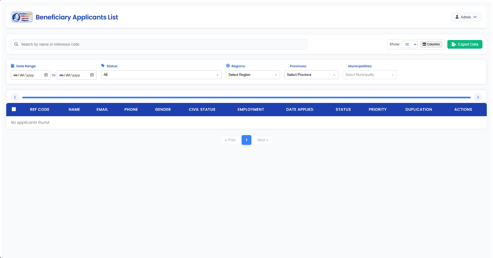

The problem
The Pambansang Pabahay para sa Pilipino Program requires organized beneficiary information and reporting.
Government systems
Structured workflows for a national housing program.

The Pambansang Pabahay para sa Pilipino Program requires organized beneficiary information and reporting.
Dashboards, PAF workflows, and data reporting provide a structured application for managing beneficiary records.
A platform supporting beneficiary management and reporting for the 4PH program.